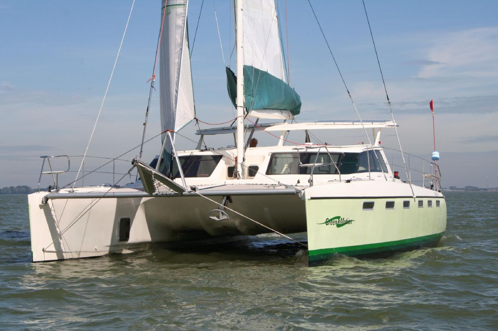
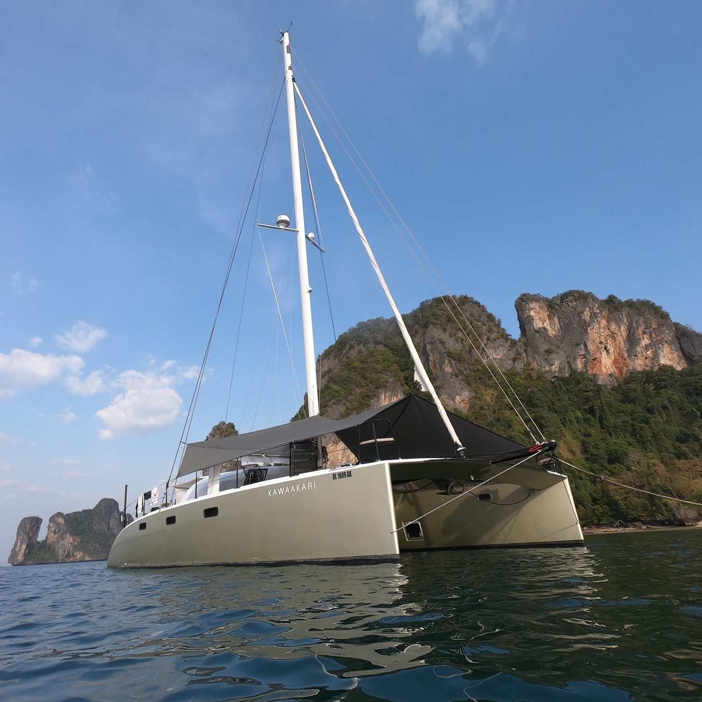
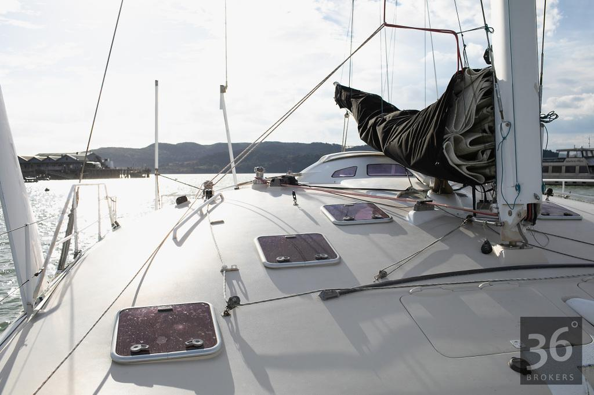

Energy Observer
A beautiful hydrogen/wind/solar/electric catamaran. The main idea behind this unique vessel is to combine various sources of energy to propel electric motors, to always be able to move. My main object of interest is dual-faced solar panels.
Solar array output: 34 kWp
Links:
Tûranor PlanetSolar
The largest solar-powered boat in the world. Launched in 2010, this catamaran is 102' long. Built by Howaldtswerke-Deutsche Werft and designed by LOMOcean Marine. The vessel is a giant floating solar panel, and I hope to get one day a chance to see her with my own eyes. Here’s more information.
Solar array output: 93.5 kWp
Silent Yacht
These luxury electric power cats need no introduction. The main point of my interest in them is their massive photovoltaic system that theoretically allows infinite cruising range given enough sunlight. Achieving that is one of the main goals that Curious Cat has.
Solar array output: 16.8 kWp
Indigo Lady
A sailing charter cat that was transformed into a “Silent Yacht”. Uses superb Super-B batteries, OceanVolt propulsion. I'm borrowing the idea of splitting the solar panels into two sections (port & starboard), since Curious Cat’s beam is 30', and I don't want the whole roof to fly away next time she goes through a storm.
Solar array output: 7.2 kWp
Links:
MODX 70
Very new concept, lots of great architectural and engineering decisions. Wing sails, electric propulsion.
Solar array output: 15 kWp
Links:
Ya — 2015 custom fossil-free monohull sailboat
Built out of vinylester, equipped with two electric motors. This is what I want to do with my boat, the way I want Curious Cat to be: green, sustainable, free. More info is available on their website.
Solar array output: 1.2 kWp
TAG 60
Designed by Greg Young. Just another beautiful boat that's nice to look at.
Links:
Green eMotion — 2010 African Cats GreenCat 445

I was pleasantly surprised to discover this rare and special 43' catamaran. She was a bit out of my budget, but already electric, built out of best materials on the market, looking incredibly beautiful on the inside, and equipped with unique retractable propulsion system that can be lifted completely out of the water when not in use — as all propulsion systems on sailboats should be, in my humble opinion. Both bottom and top parts of this vessel are built as one piece (monocoque construction), which makes it stronger and lighter — a feature only Seawind and couple other makers are known for.
Blue Saga — 2018 LUNA 47
This is a high-end 47' sailing liveaboard catamaran that incorporates many interesting modern technologoies. Videos made by her owners served as great help in my research. All-electric propulsion, MacGlide environmentally-friendly antifouling sticker, flush port windows and hatches — those are the things that I imagined having on my dream boat. More info can be found on this beautiful website.
Kawaakari — 2013 Erik Lerouge 137

An absolute stunner, this magnificent 45' vessel is a carbon kevlar daggerboard cat capable of sailing at 26 knots! Early in my search I was looking strictly for Erik Lerouge designs — that’s how much I like them.
MAXI JAZZ — 2010 Feral 50

Custom-made one-of-a-kind composite 50' performance cruising catamaran built by Waikato Marine Composites in New Zealand. Designed by Nic Bailey. The construction is carbon fiber kevlar vacuumed hull with incredibly beautiful lines inside and out. Both the interior and body somehow remind me of a flying saucer. Painted with Atlex Elite Polyurethane, this is one of the vessels I look up to, a real masterpiece.